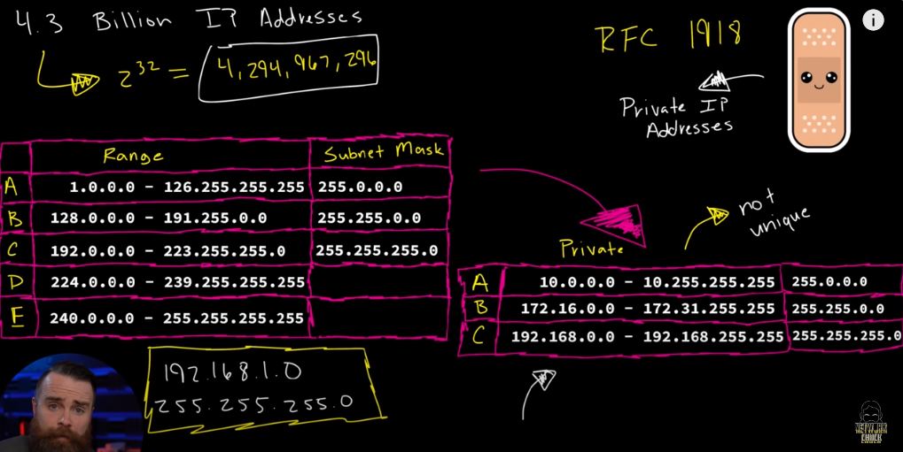
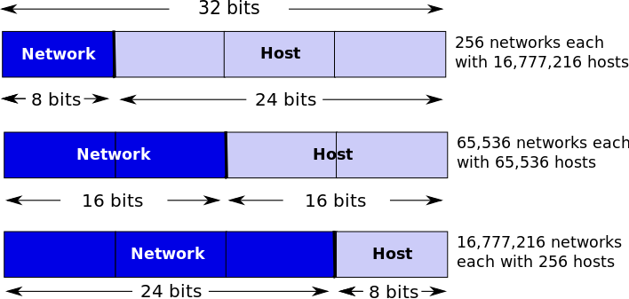

Apêndice C: Network
Conjunto de dispositivos como computadores, servidores, telefones celulares, etc., que estão conectados e podem compartilhar informações e recursos entre si. As redes podem ser pequenas e locais (como uma rede doméstica) ou abranger uma grande área geográfica (como a Internet).
C.1 Endereços IP Privados ( Redes Locais )
Os endereços reservados para redes locais, também conhecidos como endereços IP privados, são:
- 10.0.0.0 a 10.255.255.255
- 172.16.0.0 a 172.31.255.255
- 192.168.0.0 a 192.168.255.255
(RFC1918 2024; Moskowitz et al. 1996)
As classes de endereços IP são diferentes em termos de quantidade de redes e hosts que podem acomodar:
- Classe A: Este é o maior tipo de rede, pois pode acomodar mais de 16 milhões de hosts. Os endereços de Classe A variam de 1.0.0.0 a 126.0.0.0.
- Classe B: Estas redes podem acomodar até aproximadamente 65.000 hosts. Os endereços de Classe B variam de 128.0.0.0 a 191.255.0.0.
- Classe C: Estas redes são menores, acomodando até 254 hosts. Os endereços de Classe C variam de 192.0.0.0 a 223.255.255.0.
- Classe D: Esta classe é reservada para multicast. Os endereços variam de 224.0.0.0 a 239.255.255.255.
- Classe E: Esta classe é reservada para uso futuro ou experiências de pesquisa. Os endereços variam de 240.0.0.0 a 255.255.255.255.
C.1.1 Loopback - 127.0.0.0
O range 127.0.0.0 é reservado para comunicações de loopback. Isso significa que é usado para testar a rede de um computador. Qualquer tráfego enviado para um endereço dentro deste range é redirecionado de volta para o próprio computador.
Exemplo, uma forma de testar se a porta Ethernet esta ok é fazer um loopback nela, conforme abaixo:1
1 Usar o CMD do Windows
ping 127.0.0.1C.2 Entidades de Rede
C.2.1 Roteadores
Roteadores, também conhecidos como routers, são dispositivos que encaminham pacotes de dados entre redes de computadores. Eles têm a capacidade de “rotear” informações de um lugar para outro, fazendo conexões eficientes entre diferentes redes. Isso é crucial para a internet, onde os pacotes de dados podem ter que passar por várias redes antes de chegar ao seu destino final.
C.2.2 Switches
Switches, também conhecidos como comutadores, são dispositivos de rede que conectam vários dispositivos em uma rede de computadores. Eles usam endereços MAC para encaminhar dados para o dispositivo de destino, permitindo a comunicação de dados de alta velocidade entre os dispositivos conectados. Ao contrário dos roteadores, que encaminham os dados para redes diferentes, os switches operam principalmente dentro de uma única rede.
C.2.3 Default Gateway
O Default Gateway, ou Gateway Padrão, é um dispositivo de rede que serve como um ponto de acesso ou IP que os dispositivos usam para enviar informações para redes fora da sua rede local. Em geral, é o endereço do seu roteador na rede.
C.3 Comandos úteis
C.3.1 ipconfig ( Windows )
O ipconfig é um comando disponível em muitos sistemas operacionais baseados em Unix e em sistemas Microsoft Windows. Ele é usado para exibir as configurações atuais de rede do sistema, como endereços IP, máscaras de sub-rede, gateways padrão e muito mais.
O comando ifconfig é uma ferramenta de linha de comando que é usada para configurar, gerenciar e consultar as configurações de rede em sistemas operacionais Unix/Linux. Ele permite configurar (ou exibir) as interfaces de rede do sistema, como endereços IP, máscaras de sub-rede, entre outros.
C.4 Subnetting IPv4
C.4.1 Subnet Mask
É a máscara de sub-rede, é um número que define a separação entre a parte da rede e a parte do host em um endereço IP. Ela é usada para identificar a sub-rede a qual um endereço IP pertence.(Systems, n.d.)

MASK > 128 | 64 | 32 | 16 | 8 | 4 | 2 | 1
HOST.NET > 256 | 128 | 64 | 32 | 16 | 8 | 4 | 2
INCREMENTO: É o ultimo bit roubado.
/25 > .128
/26 > .192
/27 > .224
/28 > .240
/29 > .248
/30 > .252
/31 > .254
/32 > .255C.4.2 Endereços Reservados
Os dois endereços IP reservados em cada sub-rede são o endereço de rede (primeiro) e o endereço de broadcast (ultimo).
Logo a quantidade de endereços disponíveis são o total de endereços, menos 2 endereços, de rede e broadcast. Lembrando que um endereço, normalmente o primeiro é o endereço usado para o default gateway da rede.
Assim a quantidade disponível será o total da rede, menos 3 endereços.
C.5 Troubleshooting
C.5.1 TCP/UDP open ports
Caso não tenha a sua disposição ferramentas de diagnostico de rede como SPLUNK, é possivel utilizar comandos do PowerShell, como o cmdlet Test-NetConnection para verificar se uma porta está disponível (aberta) em um computador remoto.
Você pode usar este cmdlet para verificar a resposta e a disponibilidade de um servidor remoto ou serviço de rede, testar se a porta TCP está bloqueada por um firewall, verificar a disponibilidade do ICMP e o roteamento.
Este comando, substitui várias ferramentas populares de administração de Test-NetConnectionrede, como ping, scanner de porta TCP, tracert, telnet e pathping
- Restrição do comando: Comando usado para testar apenas a conectividade de uma porta TCP. Logo, não é possível usar o cmdlet para verificar a disponibilidade das portas UDP remotas.
- Versão Abreviada do comando Test-NetConnection: TNC é a versão abreviada do mesmo.
Exemplos: Comando para verificar se porta remota esta aberta
- Como exemplo, segue abaixo, comando2 para verificar se a porta 253 está aberta no servidor remoto ny-msg01, e sua versão abreviada:
2 Executar no powershell
3 TCP 25: Protocolo SMTP
Test-NetConnection -ComputerName ny-msg01 -Port 25
#Versão abreviada
TNC ny-msg01 -Port 25#emConstrução